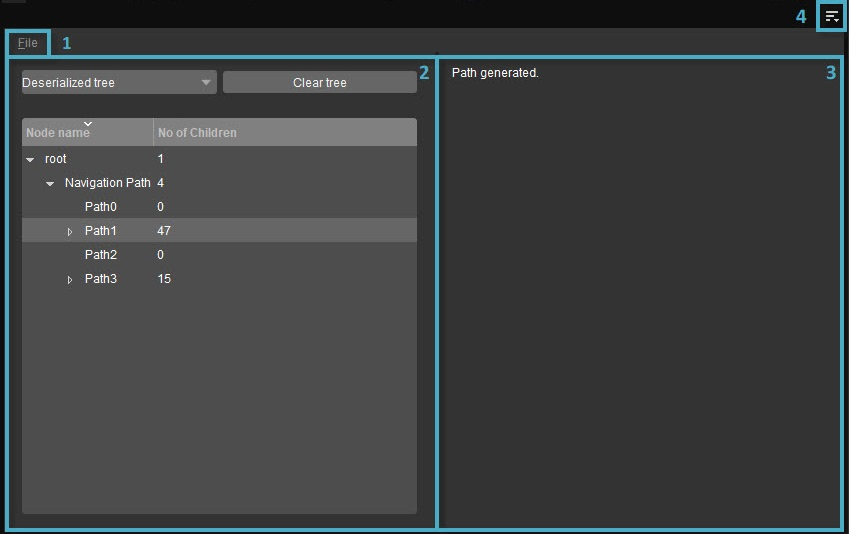
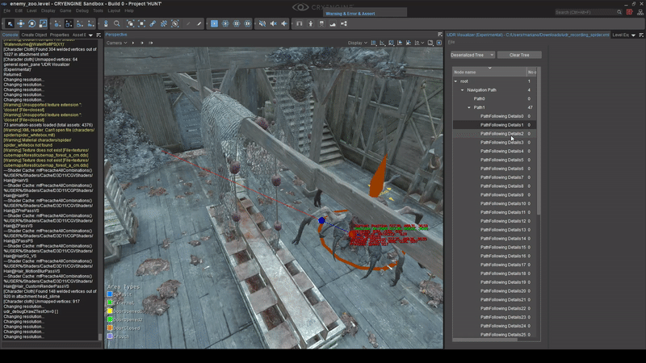
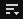

Overview
Universal Debug Recordings (UDR) refer to a standalone system (API) on CRYENGINE, created to assist programmers with visual debugging.
This visual debugging is achieved by allowing users to create, via the game code, the following Render Primitives in 3D: AABB, Arrows, Axes, Cones, Cylinders, Lines, OOBs, Spheres, Triangles and Text. These Render Primitives may further be organized into a tree structure by nesting Scopes, where a Scope refers to an element of the tree that:
- Has a unique name,
- Can contain child scopes,
- Can contain render primitives,
- Can be re-entered upon subsequent calls,
- Has its memory automatically allocated/deallocated by the C++ stack as required.
Organizing Scopes into a tree structure also makes it easy to keep the data clean, easy to navigate and interact with.
The UDR Visualizer in Sandbox allows visualization of 3D Primitives within the game world, along with saving/loading of Render Primitives through XML files. It is accessed via the Tools → Advanced → UDR Visualizer (Experimental) option of the Sandbox Main Menu.
The UDR Visualizer has been extensively used in the development of HUNT: Showdown, since it lends itself well to visually debugging complex bugs by:
- Allowing programmers to inspect the 'state' of each scope, which contains recorded information in the form of text/render primitives, at each individual step.
- Intermixing visuals (render primitives) with text in the 3D world.

UDR Visualizer Overview
For an example of creating debugging routines and using the UDR Visualizer to visualize Render Primitives, please refer to the technical documentation of UDR.
1. File
| Option | Description |
|---|---|
| Load Recording | Loads an XML file containing a previously saved sequence of UDR scopes and render primitives, from disk. This causes the Live/Deserialized Tree toggle to switch to Deserialized Tree. |
| Save 'Live' Tree | Saves the current sequence of UDR scopes and render primitives to disk in the form of an XML tree structure. |
2. UDR Tree Panel
Render Primitives that are generated in 3D by game code are displayed in a tree structure, within this panel. Each tree begins with a root node, while the Name and No. of Children of each node are displayed in their respective columns.
Also included within the UDR Tree Panel are the following buttons:
| Button | Description |
|---|---|
| Live/Deserialized Tree | In the UDR Visualizer, the term Live Tree refers to the tree structure of scopes and render primitives generated by currently running game code, while Deserialized Tree refers to a tree structure loaded from a previously saved XML file. The Live/Deserialized Tree toggle can hence be used to switch between a live or loaded sequence of scopes and render primitives in the UDR Tree Panel. |
| Clear Tree | Clears the contents of the UDR Tree Panel. |
Selecting a particular node within the UDR Tree Panel will display the Render Primitives associated with that node and its children in the Viewport, as shown in the GIF below.

Render Primitives in the Viewport
3. Log
When the node of a Live or Deserialized Tree is selected in the UDR Tree Panel, the Log displays any log/debug messages that may be associated with the node and its children via code.
4. Menu
Clicking the 
CVars and Console Commands
The following UDR-related CVars and Console Commands are available.
| CVar | Value | Description |
|---|---|---|
| udr_debugDrawZTestOn | int: 0 / 1 | Specifies whether z-tests will be enabled or not when drawing render-primitives. This can be useful to show Render Primitives that are behind level geometry. |
| udr_debugDrawLineThickness | float: 1.0f | Specifies the thickness of lines when drawing Render-Primitives.; thicker lines are easier to recognize. |
| Console Command | Description |
|---|---|
| UDR_DumpRecordings | Saves all recordings to an XML file for de-serialization at a later time; this is useful for saving recordings when running on a dedicated server. The XML file will be automatically given a unique name, and stored under .\user\udr_recordings of the game's main directory. |
| UDR_ClearRecordingsInLiveTree | Clears all recordings of the Live Tree that are currently in memory. |
| UDR_ClearRecordingsInDeserializedTree | Clears all recordings of the Deserialized Tree that are currently in memory. |
| UDR_PrintLiveNodes | Prints all the nodes of the Live Tree to the console. This Command might generate a large amount of text in the console. |
| UDR_PrintStatistics | Prints statistics regarding the number of nodes, memory used, and other information related to the Live Tree, to the console. |